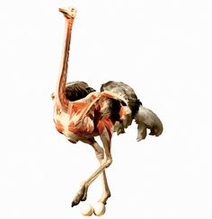

Бескилевая нелетающая птица. Имеет красное мясо, по вкусу ближе к говядине.
Африканский страус — самая крупная из современных птиц. Страус имеет плотное телосложение, длинную шею и небольшую уплощённую голову. Клюв прямой и плоский, с роговым «когтем» на надклювье, довольно мягкий. Глаза большие, с густыми ресницами на верхнем веке.
Страусы — нелетающие птицы. Для них характерно полное отсутствие киля и слаборазвитая грудная мускулатура; скелет не пневматичен, за исключением бедренных костей. Крылья у страусов недоразвитые; два пальца на них заканчиваются когтями, или шпорами. Задние конечности длинные и сильные, всего с двумя пальцами. Один из пальцев заканчивается подобием рогового копыта — на него птица опирается при беге.
Смотрите также:
попплеры,
грызуны.
Вернуться на главную.
the Glutton Club, или же Клуб обжор, во главе с его председателем Charles Robert Darwin © все права защищены ото всех и не принадлежат никому